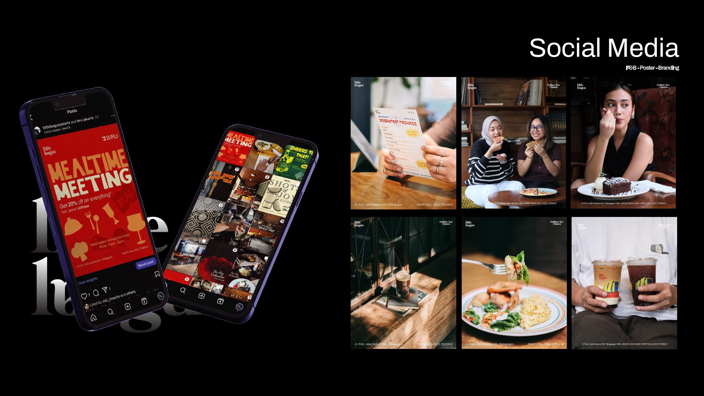
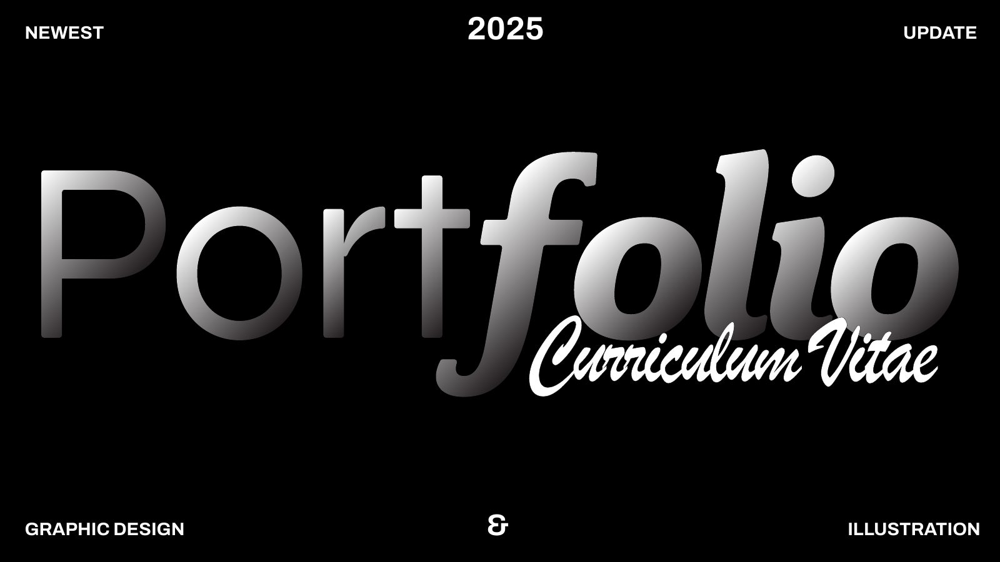
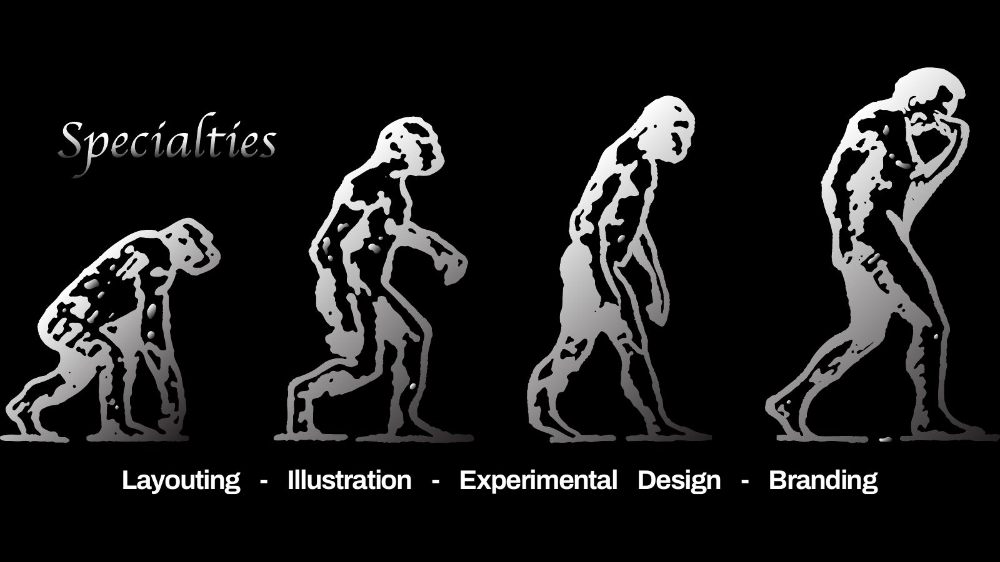
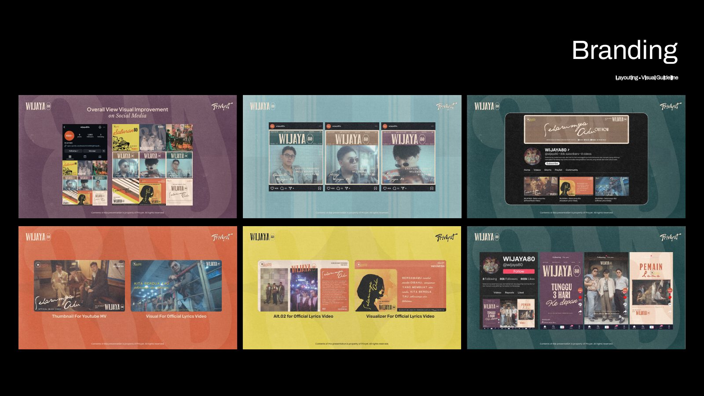
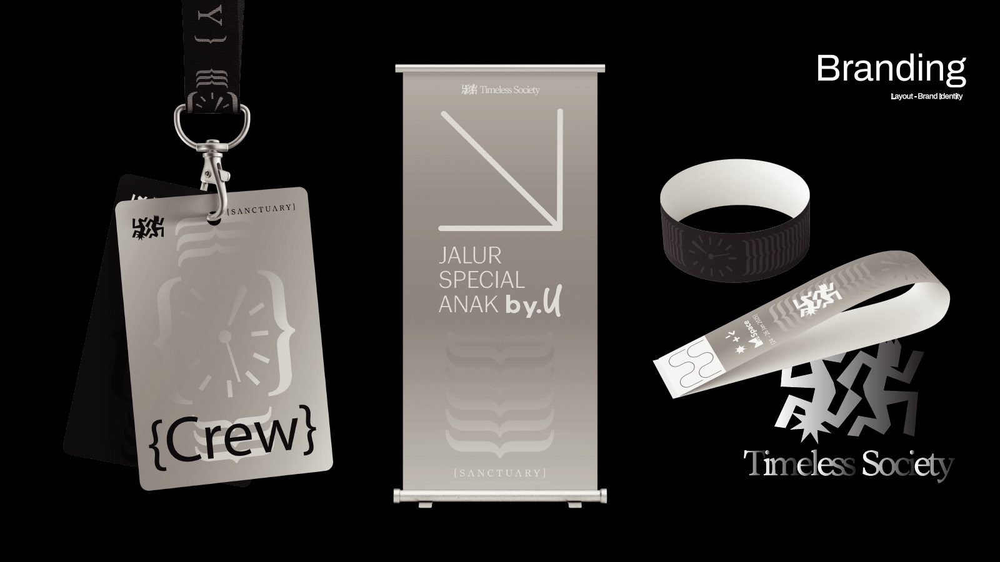
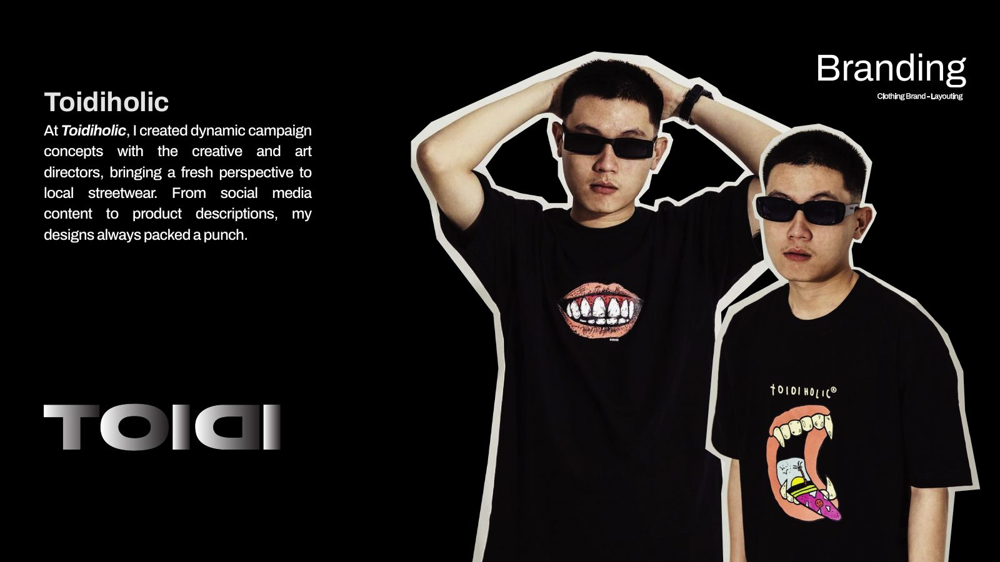
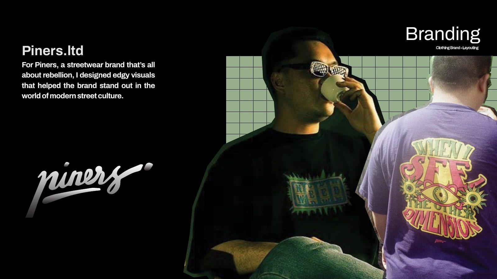
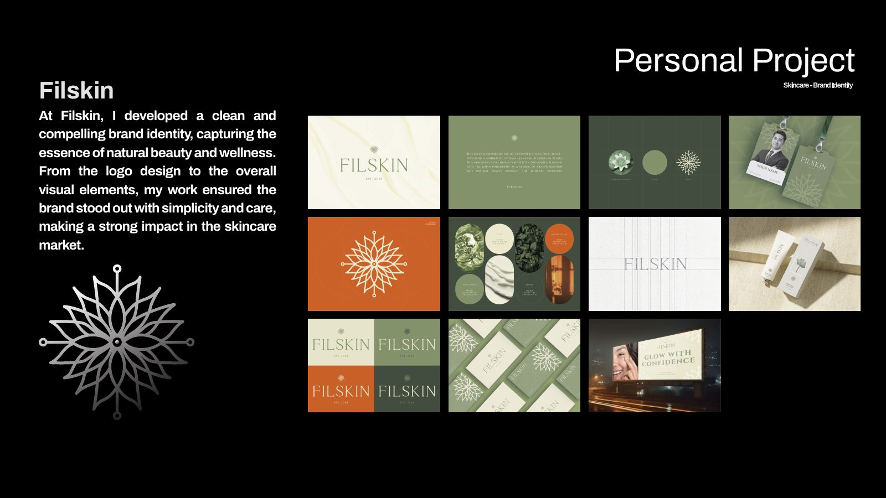
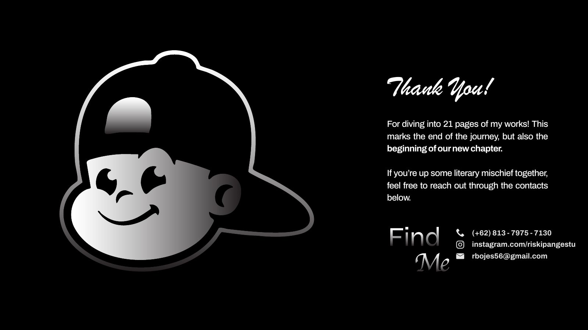

Little League Jakarta
Social media · Branding · Packaging

Little League05 / 21

Social media06 / 21

Packaging & layout07 / 21
Graphic design · Illustration
The complete portfolio, presented in its original 21-page sequence. Select any page to view it at full size.

01 / Introduction
About · Work history · Education · Specialties

About me02 / 21

Experience & skills03 / 21

Specialties04 / 21
02 / Selected work
All project boards from the original portfolio, in sequence.
Social media · Branding · Packaging
Little League05 / 21

Social media06 / 21
Packaging & layout07 / 21
Branding · Social media · Layouting

Brand story08 / 21

Visual guideline09 / 21

Social media10 / 21
Social media · Layout · Branding · Poster

Campaign overview11 / 21

Social campaign12 / 21

Brand applications13 / 21
Social media · Layout · Branding · Poster

Campaign & brand14 / 21

Social media15 / 21
Clothing brand · Branding · Layouting

Campaign concepts16 / 21

Collaboration & apparel17 / 21
Clothing brand · Branding · Layouting

Brand identity18 / 21

Apparel & layout19 / 21
Skincare · Brand identity · Personal project

Personal project20 / 21

Contact21 / 21